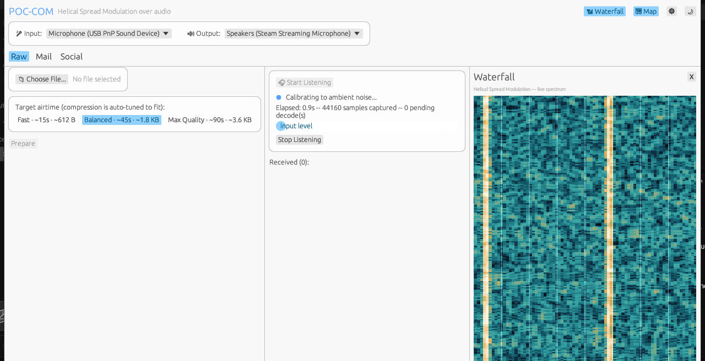
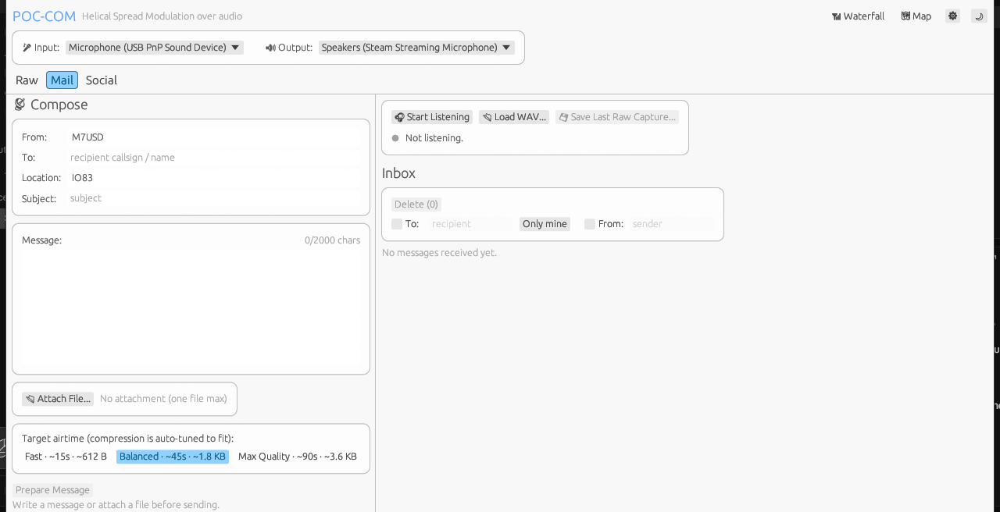
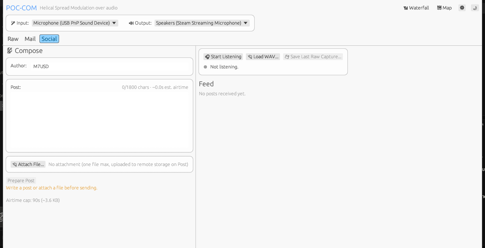
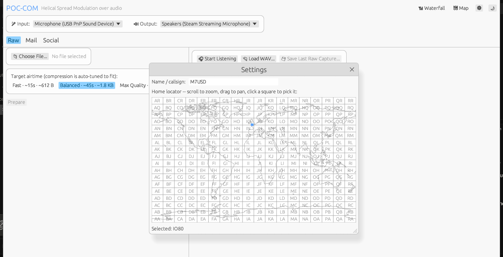
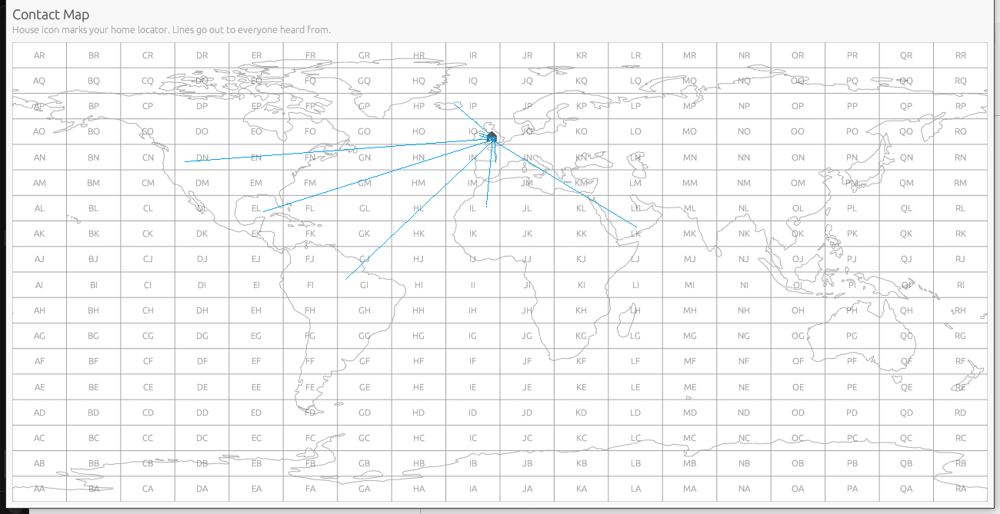

Send data over any radio
that can carry a voice call.
POC-COM turns the voice channel of a Push-to-Talk-over-Cellular radio into a data link — structured messages and open posts, spoken and heard as real speech — using nothing but audio. No API, no Bluetooth pairing, no data plan beyond whatever's already carrying the call.

Most PoC apps expose exactly one path out: the microphone.
Zello and radios like it don't give you a data channel, an API, or a paired companion app — just a voice call. POC-COM treats that voice call as the entire transport: it speaks your data out loud, plays it out the mic side, and listens for it out of the speaker on the other end — the same way a person spelling out a callsign over the radio already would.
A small, pre-rendered vocabulary
Every field — a callsign, a locator, even free text — is spelled out using NATO phonetic letters, spoken digit words, and a handful of marker words. Each of those ~49 words was recorded to real audio exactly once and is embedded directly in the app. There's no text-to-speech engine, no OS speech API, and no external process running at send time, on either platform.
Grammar-constrained Whisper ASR
A real, fully offline Whisper speech-recognition model (pure Rust, no Python, no network call) listens on the receive end. Decoding is grammar-constrained: at every step the model can only choose a word from POC-COM's own vocabulary, so it's structurally unable to substitute an unrelated word for a degraded clip — it can only ever report a word it actually knows.
If the radio can carry a voice call, POC-COM doesn't care what it is.
Because the whole link rides on real, spoken audio — not a synthetic signal trying to survive being misidentified as noise — POC-COM doesn't integrate with any specific radio, app, or vendor — there's nothing to integrate with. Two phones running the same PTT app, a dedicated PoC handset, an analog radio bridged into a PTT app, even two laptops held up to each other's speaker and mic: if a voice call gets from A to B, a POC-COM transmission does too. That's exactly why we need testers across as many different apps and devices as possible — the more combinations get exercised, the more confidently this can be called reliable.
Switch modes any time from a single header.
Listening is shared across both — there's only one input device, so there's only one "Start Listening." A transmission is classified the instant it decodes and lands in the right mode's list, even if you're sitting on the other tab when it arrives.
Structured messages, email-client style
From, To, Location, Subject, and Message — no attachment, since every character now costs one real spoken clip. From and Location auto-fill from your identity — set once in Settings — so every message you send is consistently signed and geotagged without retyping anything.
- Inbox with To:/From: filters and a one-click "Only mine" view
- Per-message read/unread state and a focused reading popover
- Location is a real Maidenhead grid square, not free text — see Settings below

An open, unsigned board
Short posts, chat-board style — no accounts, no encryption, readable by anyone in range, same as the audio itself already is. One optional attachment per post uploads to remote blob storage first, so only a short link has to be spoken over the air.
- Images render inline; video/audio/generic links open in your browser by design
- Author shares the same identity as Mail's From — set once, used everywhere
- A failed image fetch offers a one-click retry instead of a dead end


Set your callsign and grid square once.
One Settings popover, opened from the header — or just by clicking any greyed identity field, which is also exactly what happens on first launch. Pick your home Maidenhead locator by scrolling and dragging across a real, if low-resolution, coastline map — no API key, no map-tile server, no network call. It's the same public-domain outline data zoomed into whichever square you land on.
That identity then drives Mail's From
/ Location and Social's Author automatically, and a separate,
independently resizable Contact Map window plots a line from your home square to every
distinct locator you've actually heard from.
A visual log of who you've reached.
The Map button opens a genuine second window — not a popup — so it can sit on its own monitor or side-by-side with the main app while you work. Every Mail or Social transmission that carries a valid grid square gets a line drawn from home to there, building up a real record of range and reach over a testing session.

A few structural choices, not just missing features.
Voice-channel only, by construction
No gain parameter and no passthrough path anywhere in the audio layer — there's no code path that reads an input stream and writes it to an output stream. That keeps this app from ever being usable as a covert listening or relay tool, structurally rather than by policy.
Real speech, not a synthetic signal
Earlier versions of this app used tone chirps and frequency-shift-keyed tones, fighting a voice codec that's built to preserve human speech and reshape or discard anything else. The current version speaks real, natural-sounding words instead — audio the codec already passes through cleanly, because that's exactly what it's built to carry.
Marker words, not fixed frames
There's no bit-packing, no checksum, no block structure. A message is exactly the words a listener would hear over the radio, with marker words doing the only structural work — showing the parser where one field ends and the next begins.
Tuned against real hardware, not just theory
Inter-clip timing, lead-in silence, and individual vocabulary words have all been retuned after finding real mishearings on live PTT hardware — most recently by constraining decoding to POC-COM's own vocabulary at the model level, so it can no longer substitute an unrelated word for a degraded clip.
From clone to first transmission.
Get it
Grab the prebuilt binary for your OS from the beta downloads below — no installer, just run it. On Linux, mark it executable first:
chmod +x poc-com-linux-x86_64 ./poc-com-linux-x86_64
Prefer to build from source instead? Requires a GNU/MinGW Rust
toolchain on Windows (this project targets x86_64-pc-windows-gnu —
WinLibs has a POSIX UCRT build that works well) or the
stock toolchain on Linux:
# from the repo root
cargo build --release -p app_gui
Pick your audio path
Point Input at whatever's carrying the PTT radio's received audio (a cable, a loopback device, or a phone's mic held near the speaker) and Output at whatever feeds the radio's mic input. Two devices testing together each need their own working input and output.
Set your identity once
Open Settings (⚙, top right), set a callsign or name, and pick your home grid square on the map. It'll auto-fill Mail and Social from here on, and it's what the Contact Map plots against.
Pick a mode and go
Mail for a structured message, Social for an open post. Hit Prepare, wait for the 3-second countdown, and key up the radio's PTT right as it starts. On the other end, just hit Start Listening — it runs continuously and routes whatever decodes into the right mode automatically.
No radio handy yet?
Use Save as WAV after preparing a transmission, then Load WAV... on the receiving side (or the same machine) to confirm the whole pipeline works before ever touching real hardware.
What beta testers should know going in.
This works on our bench. We need it proven in the field.
POC-COM is pre-release and looking for people running real PoC setups — different apps, different phones, different radios, different amounts of background noise — to help find where the speech-clip vocabulary and Whisper decode hold up and where they don't.
Both binaries embed a full offline Whisper speech-recognition model and the entire spoken vocabulary — that's the file size, not bloat to trim.
Unsigned beta builds — Windows SmartScreen or your Linux distro may flag an unrecognized binary. Expected for a pre-release build, not a red flag. Source available on request.
- Try it across two different PTT apps or radios, not just one
- Test in a genuinely noisy environment, not just a quiet room
- Push message length toward the per-field character caps and report what breaks
- Try both Mail and Social — and switching tabs mid-listen
- If a message decodes wrong, tell us exactly what it said instead